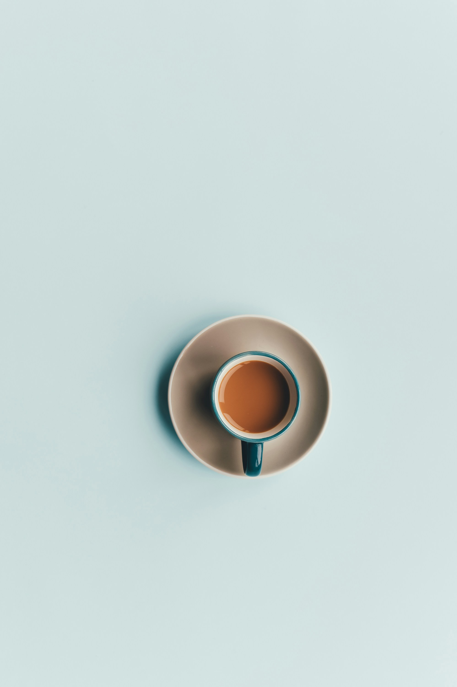

Nikmatilah Kopi Terenak di Semarang
Awali hari Anda dengan secangkir kopi pilihan yang diolah dari biji kopi terbaik. Rasakan aroma khas dan cita rasa kopi otentik yang akan membangkitkan semangat Anda.
Beli SekarangAwali hari Anda dengan secangkir kopi pilihan yang diolah dari biji kopi terbaik. Rasakan aroma khas dan cita rasa kopi otentik yang akan membangkitkan semangat Anda.
Beli Sekarang
Biji kopi kami dipilih langsung dari petani lokal terbaik dan disangrai dengan cermat oleh roaster berpengalaman. Kami percaya bahwa setiap cangkir kopi memiliki cerita yang unik.
Selain kualitas rasa, kami juga berkomitmen pada keberlanjutan dan pemberdayaan komunitas petani kopi lokal. Nikmati kopi berkualitas sambil mendukung para petani kita.
Nikmati suasana kedai yang nyaman dan estetik. Suasana hangat dipadukan dengan wangi semerbak kopi yang baru diseduh menjadikan tempat ini sangat cocok untuk berkumpul bersama teman, bekerja, atau sekadar bersantai. Orang Indonesia Minum Kopi Indonesia


Setiap cangkir yang kami hidangkan dibuat dengan ketelitian dan semangat tinggi oleh barista kami. Dari proses ekstraksi hingga latte art yang indah, rasakan kehangatan kasih sayang dalam setiap tegukan.